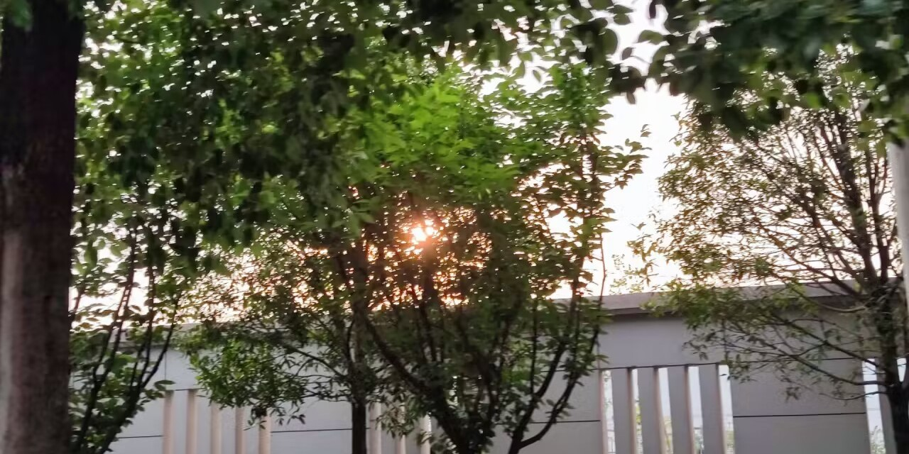

回顾·
写在前面·
如果选一个词作为我的2023年度词汇的话，大概是“变化”吧。
这实在是变化很大的一年，身份的变化、环境的变化、心态的变化…而这一切的变化，归根结底，都是以那场考试为分界点的，那么就让我把2023切开，切成两半，看看里面是什么吧。

上半年：高考与回忆·
高考的伤痛需要一生来治愈
这句话说出来似乎有些矫情，但我是很赞同的，至少，曾经。
不过现在想来，高中的记忆已经零零散散，我对往事的印象也是飘飘忽忽，也许是快乐的吧。我一直是不喜欢留下回忆的人，不喜欢拍照，不喜欢写日记，不喜欢怀旧，但是现在却发现，那些无论是好还是坏的记忆都在模糊，我竟然有点遗憾。我果然还是有珍而重之的事情的。
所以我决定开始写随笔，我认为这是对我自己和我身边的人的尊重。
很感激我的朋友，让我在半年之后，能从他保存的照片中拼凑出往事的旋律。
虽然我在说着高考的伤痛云云，但其实我算是高考的“成功者”吧，没有发挥失常和意外，甚至连高三的压抑也鲜有体会。现在看来，那真是一段值得怀念的日子，只有理想和玫瑰色。
尽管日子三点一线，但是也能苦中作乐，我会在饭点跑着去抢不用排几分钟的饭；会在每个月难得的假期放下一切，只是和朋友一起；会在寝室和室友聊学习、聊未来、聊三观、聊情感、聊有的、聊没的、聊天南海北，一直到深夜；会在课堂百无聊赖的时候悄悄戴上耳机，循环n-buna青春的挽歌；会在心情烦躁的夜晚和朋友溜到操场，跑步跑到喘不上气；会在山茶花开、天气正好的日子记录春色…之后很少感受到这样的自在了。
那时候最喜欢聊的话题就是未来，会去哪个城市，想上哪所大学，学什么专业，暑假怎么好好玩，总感觉，一聊起未来，大家眼中的疲惫都会少了几分。可现在的我对得起当初的期待吗？我不太清楚呢。
最喜欢的歌手是n-buna，他歌里惋惜的青春总是让我很受用，但是我怎么就没意识到呢，我的玫瑰色也终会褪去。不过说不定这样也好，理想与现实总是有偏差的，让最美好的都留在求之不得的骚动里，也许是更好的结果。
有什么遗憾吗，肯定是有的。虽然距离感的暧昧很美好，但是我还是想知道真正的亲密关系是什么样子。还有因为自尊和拧巴失去的好友，以及伤害过的人、错过的人、讨厌的人、喜欢的人，也许这些都没法弥补了，但是也都无所谓了，我写下这些，仅仅是为了记下。看来，我的伤痛并不源于高考，这挺好的。
最后，就以几张照片为我的高中画下句号吧。

下半年：新的开始·
接着变化出现了。
一切崭新的事物都在我眼前展开，虽然我从未见过海，但我想，那裹挟着阳光的海风也不会比这更让人喜悦了。我离开了生活了18年的城市，去了一所新的学校，认识了许多新的人，见识了许多新的事情。我接触了我曾经向往的领域，也在尽力让自己变得更强。
最深的感触是凝聚和CTF。“成为大黑客”，这样的幻想也许很多人都有过，而我很幸运，能从一个以前从未触及的平台中窥见那条道路。从零开始学习编程，从零开始学习二进制安全，我发现，曾经向往的事情真的可以触摸得到。尽管还是很菜，但是也许坚持下去的话，会有收获吧。
还有的话，就是认识了许多人吧。高中以来，我一直认为我有一点“厌蠢”的性质，这确实是带有恶意与傲慢的词语，可能我只是不喜欢高中那个集体，不喜欢那个集体与我认知上的冲突，才觉得大家都“蠢”得不像样。但无论如何，在这里我认识了更多“志同道合”的人，总感觉大家都是更鲜活、更独特的存在，我很喜欢。也许只是因为我曾经太过傲慢，不能认识到身边的人的可爱，但是这已经得不到验证了，能珍惜现在就很好了。
有什么遗憾吗，肯定是有的。还是没能维持好人际关系，自己控制不住爆炸了，所幸还有机会认识新的人。然后就是没救了的拖延症，想到自己入学前的许多愿望都还没实现，挫败感还是挺强的。还有一点的话，倒也不是遗憾，只是有点感慨，终于是把高中没能彻底断开的关系解决了，希望大家都能过上新的生活吧。
磕磕绊绊写到这里，已经不敢回头看了，担心太羞耻直接全删了，就还是放几张照片作为下半年的总结吧。

展望·
新年还是立一些flag吧，不知道明年能实现多少。